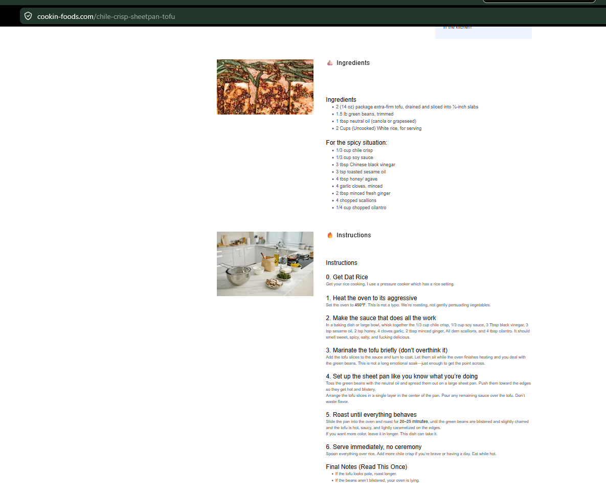

Meals
Sheet Pan Tofu and Green Beans
A sheet-pan tofu and green bean dinner with rice and a spicy soy-vinegar sauce.
Ingredients
Sheet Pan
- 2 (16 oz) packages extra-firm tofu, drained and sliced into ½-inch slabs
- 1½ lb green beans, trimmed
- Neutral oil or avocado oil, as needed
- ½ cup uncooked white rice, for serving
Spicy Sauce
- ¼ cup chili crisp
- 1 tbsp soy sauce
- 1 tbsp Chinese rice vinegar
- 1 tbsp toasted sesame oil
- 1 tbsp honey or agave
- 1 garlic clove, minced
- ½ tsp minced fresh ginger
- 1 tbsp chopped scallions
- 1 tbsp chopped cilantro
Instructions
1
Heat the oven
Preheat oven to 425°F and line a sheet pan with parchment paper.
2
Make the sauce
Whisk chili crisp, soy sauce, rice vinegar, sesame oil, honey or agave, garlic, ginger, scallions, and cilantro.
3
Marinate tofu briefly
Coat tofu with part of the sauce. This is a short flavor coating, not a long marinade.
4
Set up the sheet pan
Spread tofu and green beans on the prepared pan in an even layer. Keep everything spaced enough to roast instead of steam.
5
Roast
Roast 22–28 minutes, until tofu edges are browned and green beans are tender with some char.
6
Serve
Serve immediately over white rice with extra sauce spooned over the top.
Notes
- Best eaten hot from the oven. Keep the pan uncrowded so the tofu and beans roast instead of steaming.